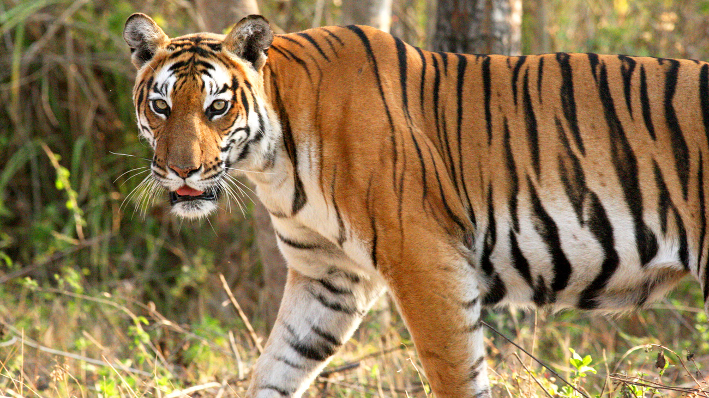
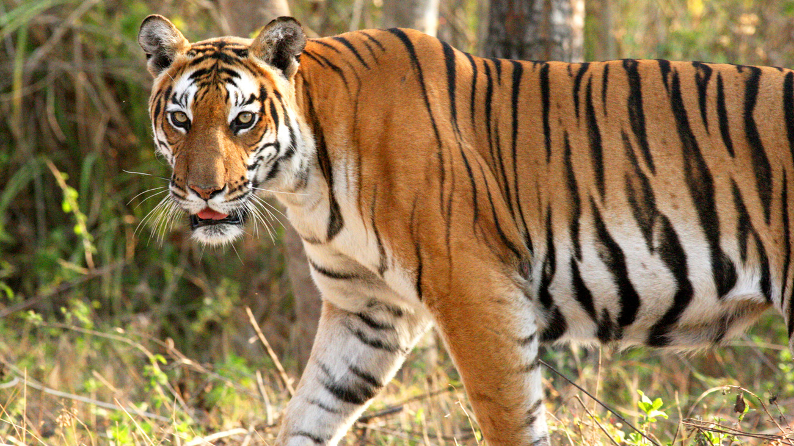
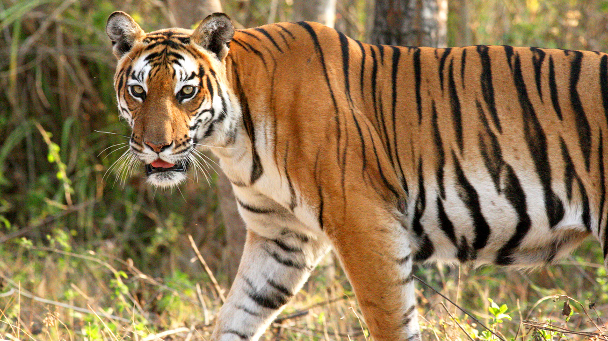

Animal type: Lion
A lion is a large, powerfully built feline known as the "king of beasts,"
famous for being an apex predator. They are social cats that live in groups
called prides, with females doing the majority of the hunting. Adult males
are distinguished by their prominent manes, which vary in color and length,
and their roars can be heard up to five miles away.
Animal type: Horse
A horse is a large, domesticated,
herbivorous mammal with a long mane, tail, and hooves, belonging to the family
Equidae. Domesticated for thousands of years, horses have been crucial to human
societies for work, transport, and sport, and have been bred into hundreds of different
varieties. They are intelligent, social animals with excellent hearing and a nearly
360-degree field of vision.
Animal type: Dog
A dog is a domesticated mammal, a subspecies of the gray wolf, known for its loyalty and
diverse breeds. They have been companions to humans for thousands of years, originally used
for work like hunting and herding, and now serve in roles such as service animals, and are
widely kept as pets.
Animal type: Cat
A cat is a small, domesticated carnivorous mammal belonging to the Felidae family, known for
being agile hunters with keen senses, sharp claws, and flexible bodies. Commonly kept as pets,
domestic cats have been living alongside humans for thousands of years for companionship and
for their ability to control pests.
Animal type: Bird
A bird is a member of the class Aves, a group of warm-blooded vertebrates
characterized by feathers, beaks with no teeth, the laying of hard-shelled eggs, and typically
the ability to fly
Animal type: Bear
A "bear" can refer to a large, furred mammal in the family Ursidae, known for being omnivorous,
or it can have different meanings in finance, slang, and as a verb. As an animal, bears are large,
powerful, and often solitary mammals with stocky legs, shaggy hair, and a plantigrade gait.
In the context of finance, a "bear" is a speculator who expects stock prices to fall
Animal type: Rabbit
A rabbit is a small, furry mammal with long ears and a fluffy tail, known for hopping on strong hind legs.
They are herbivores that belong to the order Lagomorpha and are found across the world, though the domestic
rabbit is a domesticated version of the European rabbit. Rabbits are social animals that live in groups
in burrows called warrens.
Animal type: Fish
A fish is a cold-blooded, aquatic vertebrate with fins and gills, and most are covered in scales.
They live in water, using gills to extract oxygen, and swim using their fins and tails.
Fish are incredibly diverse, with over 33,000 species found in all types of aquatic environments,
from the deepest oceans to freshwater rivers and lakes.
What animal is this?
What animal is this?
What animal is this?
What animal is this?
What animal is this?
What animal is this?
What animal is this?
What animal is this?

This is Ryan who find animals and take pictures because he love his job He always wanted to be a photographer and discover all kind of animals He will never stop because he always find joy when animals has never been discover and get paid a lot by huge corporationsa and could bring more scientist to study animals's gene and dna and behaviors.


testing